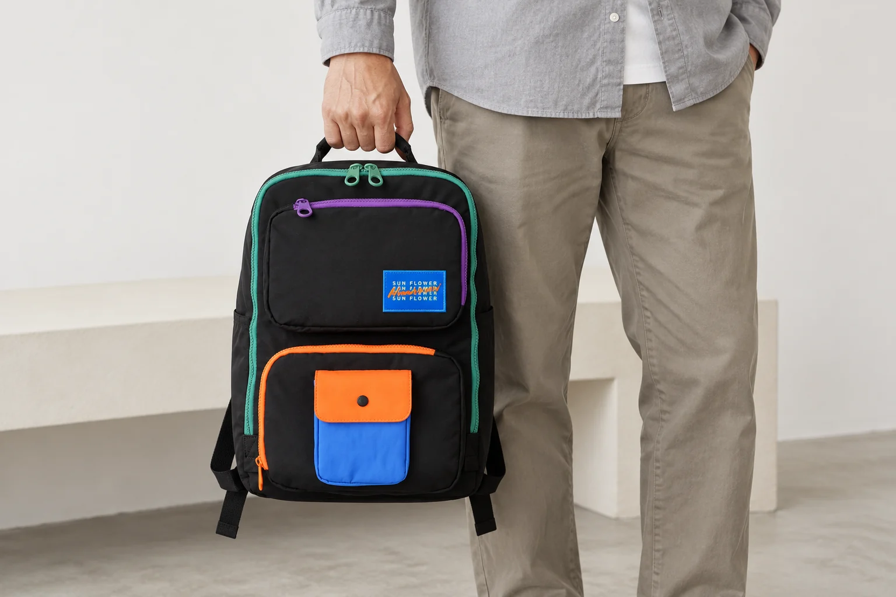
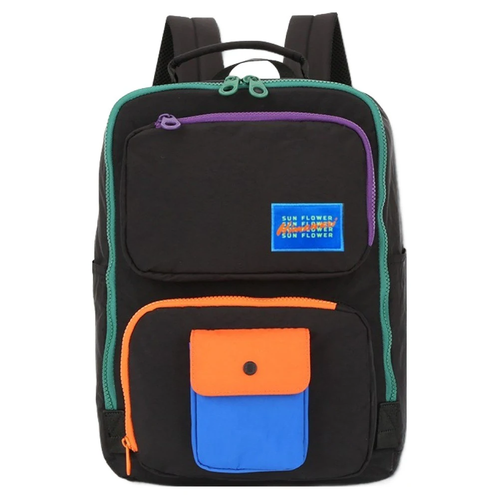
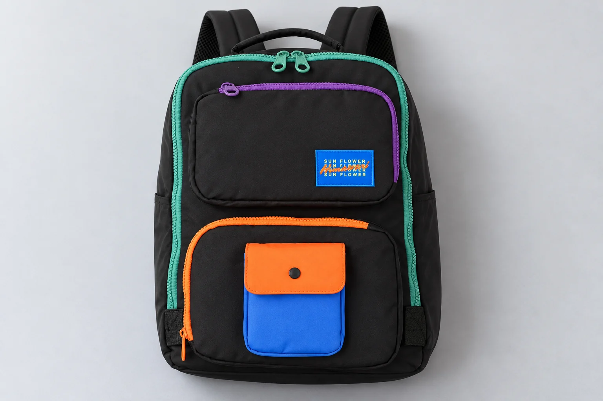

조용한 곳에서 쓸 백팩, 구매 전에 여밈 소리는 어떻게 확인할까

도서관 좌석에서 백팩을 열려는데 지퍼보다 손잡이가 먼저 눈에 들어옵니다. 움직일 때 어떤 소리가 날지 사진으로는 알 수 없기 때문입니다. 조용한 장소에 가져갈 가방을 고르는 사람에게는 주머니의 개수만큼 여미고 푸는 과정도 중요할 수 있습니다. 그렇다고 검정 원단이나 작은 지퍼라는 외형만으로 조용한 가방을 고를 수는 없습니다.
No.8029 블랙오렌지의 제품 사진에는 긴 민트색 지퍼 선과 두 개의 지퍼 손잡이, 앞주머니의 보라색·주황색 지퍼, 작은 주머니의 덮개가 보입니다. 이 사진은 여밈이 놓인 위치를 보여 주지만 개폐음을 들려주지는 않습니다. 여기서는 이 모델의 소음을 측정하거나 조용하다고 평가하지 않고 구매 전에 어떤 소리를 어떤 조건으로 확인할지 정리합니다.
입구를 여는 소리와 부품이 닿는 소리를 나누어 봅니다
가방에서 나는 소리를 모두 지퍼 소리라고 부르면 확인하려는 부분이 모호해집니다. 슬라이더가 지퍼 선을 따라 움직일 때의 소리와 손잡이가 다른 부품에 닿을 때의 소리는 구분해 볼 수 있습니다. 소리의 실제 크기를 미리 정하는 것이 아니라 어떤 동작을 보여 달라고 요청할지 구분하는 것입니다. 제품이 가만히 놓여 있을 때와 손으로 잡고 움직일 때도 같은 장면이 아닙니다.
예를 들어 No.8029의 큰 입구를 한 번 여닫는 장면이 궁금한 사람과 앞주머니에서 자주 물건을 꺼낼 사람이 듣고 싶은 구간은 다릅니다. 앞주머니가 더 작으니 반드시 소리도 작을 것이라고 가정하지 않습니다. 사진에서 보이는 지퍼의 길이와 손잡이의 수는 확인할 동작을 고르는 단서로 쓰고 그 동작의 소리는 실제 자료가 있을 때 판단합니다.
덮개가 있는 작은 주머니는 닫힌 모습만 보고 고정 방식을 단정하지 않습니다. 여밈 종류가 확인되지 않은 상태에서 특정 단추의 딸깍 소리가 날 것이라고 적으면 제품에 없는 동작을 예상하게 됩니다. 이 부분을 자주 사용할 생각이라면 무엇으로 여미는지부터 확인한 뒤 그 여밈을 여닫는 장면이 있는지 묻는 순서가 맞습니다.

배경 음악이 있는 영상은 무엇을 알려 줄까요
착용 영상은 걸을 때 가방이 놓이는 위치나 외형을 살펴보는 자료가 됩니다. 그러나 배경 음악이 개폐 소리보다 크게 들리거나 원래 소리가 편집된 영상이라면 여밈의 소리를 판단하는 데 쓰기 어렵습니다. 음악이 작게 들린다고 원래 소리도 작았다는 뜻은 아닙니다. 영상의 설명에 현장 소리를 어떻게 담았는지 적혀 있지 않으면 모르는 조건으로 남겨 둡니다.
판매처에 추가 자료를 부탁할 수 있다면 관심 있는 주머니를 평소처럼 한 번 여닫는 짧은 원음 영상을 요청할 수 있습니다. 가방 전체를 돌려 보여 주는 영상과 지퍼를 실제로 움직이는 영상은 답하는 질문이 다릅니다. 어떤 주머니인지 사진에서 위치를 표시하거나 앞면의 위쪽·아래쪽으로 구분하면 내가 확인하려던 여밈이 빠진 영상을 받는 일을 줄일 수 있습니다.
원음 영상이 있더라도 다른 상품의 영상과 음량 막대만 맞춰 순위를 정하지는 않습니다. 촬영 기기의 위치와 거리, 녹음 설정, 재생 기기의 음량이 다르면 들리는 크기가 달라질 수 있습니다. 이 자료는 동작과 소리의 관계를 대략 살펴보는 용도이지 표준화된 소음 측정값이 아닙니다. 실제 수치가 없는 제품에 임의의 데시벨 값이나 저소음 등급을 붙이지 않습니다.
내가 반복할 동작을 먼저 고르면 요청이 짧아집니다
조용한 좌석에서 가장 자주 꺼낼 물건이 무엇인지 생각하면 비교할 여밈도 좁힐 수 있습니다. 필기구를 작은 앞주머니에서 꺼내고 큰 입구는 자리에 앉기 전에만 열 계획이라면 두 동작에 같은 비중을 둘 필요는 없습니다. 반대로 큰 칸을 수시로 열어야 한다면 앞주머니의 개폐 모습만으로 선택을 끝내기 어렵습니다. 이 차이는 새 물건을 어디에 담을지 정하는 요령보다 가방을 여는 횟수와 대상이 무엇인지 정하는 문제입니다.
가상 구매 상황을 하나 들어 볼 수 있습니다. 두 사람이 같은 No.8029 사진을 보고도 한 사람은 위 앞주머니를, 다른 사람은 큰 입구의 두 손잡이가 움직이는 모습을 궁금해합니다. 두 사람 모두 조용한 곳에서 쓸 생각이지만 필요한 자료가 다릅니다. 가방이 조용한지 한 번에 묻기보다 본인이 사용할 입구와 동작을 말해야 답변의 범위도 맞아집니다. 이는 실제 구매자 후기나 사용 결과를 옮긴 사례가 아닙니다.

소리가 마음에 걸려도 부품부터 바꾸지는 않습니다
소리를 줄일 생각으로 지퍼 손잡이에 임의의 장식을 달거나 부품을 감싸는 방법을 바로 선택하지는 않습니다. 더한 물건이 지퍼 선에 닿거나 다른 부분과 부딪힐 수도 있고 해당 제품에 맞는 방식인지 확인되지 않았기 때문입니다. 특정 개조가 소리를 줄인다는 시험 결과도 여기에는 없습니다. 사용 중인 제품에 관해 질문할 때는 먼저 어떤 동작에서 어떤 부품이 닿는지 그대로 설명합니다.
가방의 입구를 움직일 때 원단이 걸리거나 부품이 맞지 않는 느낌이 있다면 조용히 쓰는 요령과 작동 상태 확인을 섞지 않는 편이 좋습니다. 억지로 소리를 없애려고 강하게 잡아당기거나 여밈에 확인되지 않은 약품을 바르는 대신 판매처의 관리 안내를 확인합니다. 이번 글의 질문은 조용하게 만드는 수리법이 아니라 구매 전에 무엇을 들어볼 수 있는가에 관한 것입니다.
No.8029의 외부 크기 27 × 39 × 14cm와 앞면 배색은 제품 정보와 사진으로 확인할 수 있습니다. 반면 같은 사진에서 실제 개폐음을 얻을 수는 없습니다. 소리에 민감한 장소에서 쓸 예정이라면 필요한 여밈의 종류와 반복할 동작을 정한 뒤 실제로 확인 가능한 자료가 있는지 살펴보세요. 사진으로 알 수 있는 것과 소리를 들어야 알 수 있는 것을 나누면 조용하다는 막연한 기대보다 구체적인 선택 기준이 남습니다.